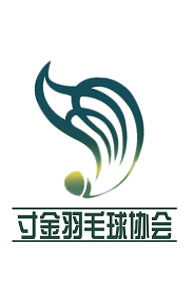

羽毛球协会
海大寸金羽协成立于2003年，在这辉煌的13年中，羽协这个大家庭不仅为自己，也为学校带来了不少荣誉，其中在海大杯中连续7年夺冠。羽协还组织与其他学校的友谊赛，以及一些地区性的比赛。协会每周定期开展常规活动，提高会员们的球技。于此同时，我会也会不定期来展特训，提高技能同时培养球员们间的默契。
品牌活动———————————————————————

海大寸金羽协成立于2003年，在这辉煌的13年中，羽协这个大家庭不仅为自己，也为学校带来了不少荣誉，其中在海大杯中连续7年夺冠。羽协还组织与其他学校的友谊赛，以及一些地区性的比赛。协会每周定期开展常规活动，提高会员们的球技。于此同时，我会也会不定期来展特训，提高技能同时培养球员们间的默契。